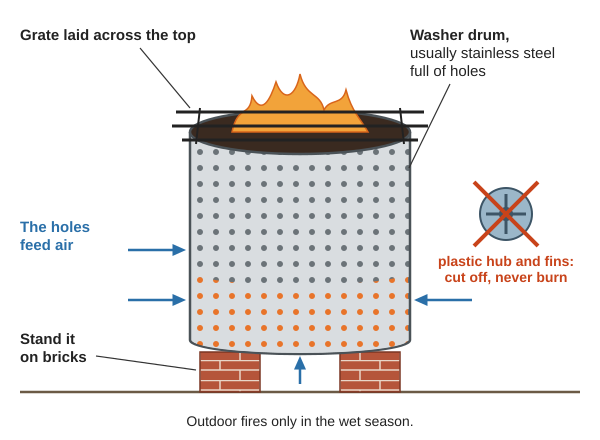
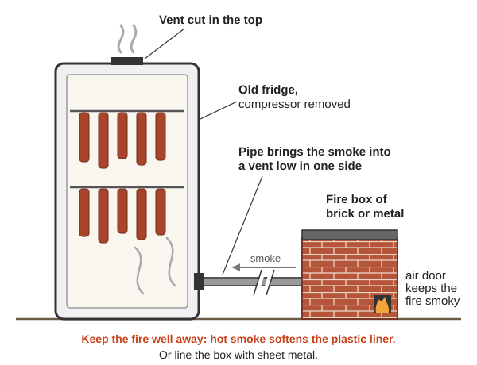
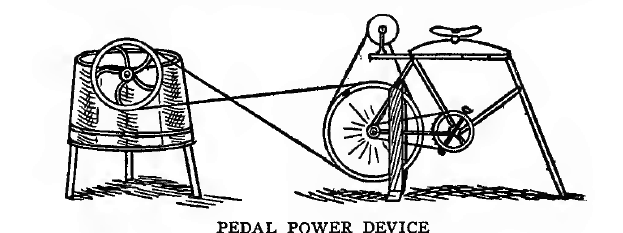
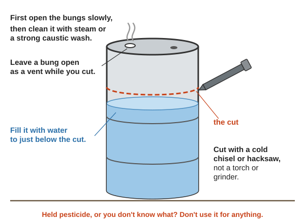
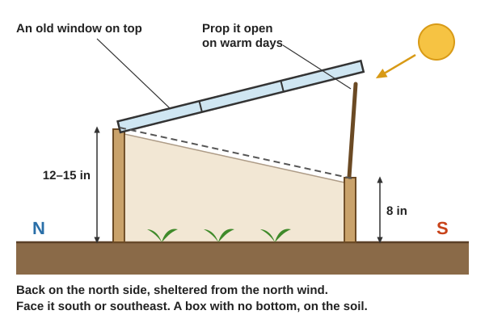

When the stores are shut, every dead washing machine, freezer and car around the Illinois Valley is a parts store. This guide takes the broken things you are most likely to find one at a time, always in the same order: what is inside worth keeping, what to make with it, and what can hurt you. It starts with the few things never to cut, burn or open, and a table to find a part fast. The books behind it are in Engines-Motors\, Electronics-Repair\, Blacksmithing-Tools\ and Homestead-Skills\; each link opens a book at the right page. Much salvage know-how is in no book at all: those lines say (rule of thumb).
The short version
Make it dead before you open it. Unplug it, drain it, and discharge every capacitor: the charge left in one "is, in many cases, sufficient to cause a lethal shock" (NEETS 21, p. 32).
A few things are never cut, burned or opened (the list is just below): gas and air tanks, fridge pipes, microwave high-voltage parts, picture tubes, smoke detectors, lithium packs, fluorescent tubes, and drums that held chemicals.
The box is often the best part. A dead freezer is an insulated chest, a washer's drum a fire pit, an electric water heater a glass-lined tank, an oil drum a stove (rule of thumb).
Keep every motor. Washer and dryer motors turn grinders and pumps; the magnet motors in treadmills and cordless tools make power when you spin them (Engines guide).
Wind rarely pays. It needs an average wind of at least 9 mph (DOE Small Wind, p. 20), and a car alternator on a small homemade rotor makes almost nothing (below).
Sort metal as you go: a magnet, a grinder's sparks and the weight tell most scrap apart (Navy Steelworker, pp. 21–25).
A dry, sorted, labelled parts store beats a pile(rule of thumb).
☠️ Never cut, burn or open these
These kill or poison people who salvage. Leave them whole, or use only what the last column says.
Thing
Why
Instead
Propane tanks, gas cylinders, air tanks, fire extinguishers
An "empty" tank still holds gas: tanks and drums that held fuel are "potentially more dangerous than a filled container" (FM 10-67-1, p. 14). A steel cylinder that bursts acts like "a bomb burst" (FM 10-67-2, p. 118)
Use a tank only for what it held. Never heat, weld or cut one, or make a stove or boiler of it (Heat into Power)
Fridge, freezer and air-conditioner pipes
The gas is under pressure; handle it with "extreme caution" (TM 9-8000, p. 715). A gas (absorption) fridge holds ammonia, pressure-tested to 717 psi (NBS report, p. 9)
Microwave-oven transformer, capacitor and magnetron
Thousands of volts (Make-Do), and a capacitor's leftover charge can be "sufficient to cause a lethal shock" (NEETS 21, p. 32)
Discharge it, keep the safe parts, never power the transformer (Microwave ovens)
Old tube TVs and monitors (CRTs)
A broken tube implodes: "Almost two tons of force hurl glass fragments," and the face's coating "is extremely toxic" (NEETS 6, p. 131). Up to 30,000 volts inside (NEETS 7, p. 268)
Leave the tube whole; take only the case, knobs and speaker (rule of thumb)
Smoke detectors
The common (ionization) kind holds "a small amount of radioactive material" (TM 5-683, p. 139)
Keep it working: smoke detectors "reduce the risk of deaths by over 70%" (WHO, p. 107). Never open, crush or burn one (rule of thumb)
Store them whole with the toxics; a broken one: Sanitation
Treated lumber, tires, plastic, wire insulation: never burn
Treated wood "should not be burned in open fires or in stoves" (Wood Handbook, p. 329); "burning even small amounts of plastic or rubber releases toxic chemicals such as dioxins, furans, and PCBs" (Hesperian ch. 18, p. 24)
Strip wire with a knife, not a fire (rule of thumb). Reuse or bury the rest (Sanitation)
Never a fire pit, grill, stove or forge part. Cut it cold, with snips or a hacksaw (rule of thumb)
Lead paint and asbestos in old appliances, cars and buildings
Lead paint was used on houses until 1976 and "is still manufactured … for metal products, particularly those made of steel" (Wood Handbook, pp. 391–392). Asbestos was used in heat insulation, "brake linings and clutch facings" and gaskets, and causes fatal lung disease (NEETS 4, p. 110)
Never torch, grind or burn painted scrap. Leave old heat shields, pipe wrap and brake dust alone (rule of thumb)
Drums and tanks that held fuel or chemicals
Heat or sparks on used barrels "is extremely dangerous and could lead to property damage or loss of life" (Navy Steelworker, pp. 95–96). Pesticide drums: "Do not attempt to use the drums" where they could reach feed or water (Peace Corps M-2, p. 421)
Read the label first. Cut a fuel drum only as in 55-gallon drums; never reuse a pesticide drum
I need… → where to find it
I need…
Look in
See
A motor
Washers and dryers, furnace blowers, treadmills and cordless tools (magnet motors that also make power), drills, fans
Make it dead, let stored force out, photograph it, and sort what comes off
Make it dead. Unplug it, take out the batteries, drain fuel, oil and water into marked cans, and pull the spark plug wire off any engine (rule of thumb).
Discharge the capacitors in microwaves, TVs, power supplies, inverters and motors: ground clip on first, then touch each terminal several times, hands off the metal (NEETS 21, p. 33).
Let stored force out: springs, struts, tires on rims, anything under pressure. Leave a garage door's big wound spring alone: it breaks bones (rule of thumb).
Photograph, tag and mark every wire and part before you pull it (Engines guide).
Safety glasses and gloves; cut, grind and strip outdoors (rule of thumb).
Sort as you go into labelled bins: motors, wire, fasteners, bearings, belts, springs, magnets, glass. Store motors "in a dry place and kept free from dirt" (Illinois Electric Motors for Farm Use, p. 23).
A shorting probe for step 2: clip the wire to a good ground first, then hold the handle and touch the rod's tip to each terminal several times, never touching the metal (NEETS 21, p. 33).
Washing machines and dryers
The drum makes a fire pit or a sieve; the motor runs a grinder; the dryer's fan blows a forge
Inside, worth keeping(rule of thumb): the drum, usually stainless steel full of holes; the motor, an induction motor of about ⅓–½ horsepower in older top-loaders and dryers, and in newer washers a brushed "universal" motor or a flat magnet motor on the drum; the drain pump, belts, pulleys, springs, hoses and water valves; a dryer's blower wheel.
Make with it:
Fire pit or brazier: cut off the plastic hub and fins (don't burn them), stand the drum on bricks and lay a grate across it; the holes feed air (rule of thumb). Outdoor fires belong in the wet season (Wildfire). Oregon counts "a fire in a burn barrel" as open burning, and bans burning plastic, rubber, tires and "auto parts, including frames" anywhere, any time (DEQ, p. 1). Here: no open fires June–October, until real rain (rule of thumb). As a burn barrel, for dry paper and clean wood only: Sanitation.

The drum on bricks with a grate across it; the plastic hub and fins come off first and are never burned (a diagram drawn for this guide).
Sieve or composter: on its side on a frame with a crank, the drum sifts compost and soil, washes potatoes, or tumbles compost under a lid (rule of thumb).
Smoker firebox: the drum holds the smoky fire, and a pipe takes the smoke to a fridge cabinet (below).
Grinder, buffer or lathe drive from an induction motor. A 4-pole motor turns about 1,725 rpm (Illinois, p. 10). Choose pulleys so that motor pulley × motor rpm = machine pulley × machine rpm (p. 17). Swap the starting winding's two leads to reverse it. A split-phase motor starts only easy loads; a capacitor-start motor starts pumps and compressors (p. 11). Never run a grinding wheel faster than the speed printed on it (rule of thumb).
A slow generator for a water wheel, from a flat magnet motor: test it first (Engines guide) (rule of thumb).
Forge blower from a dryer's blower (Blacksmithing) (rule of thumb). With no power, an old bicycle can turn the washer (Bicycles).
Watch out: a universal motor "runs as fast as the load permits" (Navy Construction Electrician, p. 241): never run one with nothing on it. Discharge the motor's capacitor (Engines guide). The cabinet may be galvanized under its paint, so never burn or weld it, and cap a gas dryer's gas line first (rule of thumb).
Water heaters
The tank becomes a solar heater, a cistern or a stove body; the elements soak up spare power
Before you scrap a working one: its tank holds 20 to 60 gallons of drinking water (FEMA H-20, p. 31). Shut off the power or gas, open a hot tap, and drain it from the bottom valve (rule of thumb).
Inside, worth keeping(rule of thumb): a steel tank, glass-lined in most and galvanized in some old ones; foam or fiberglass insulation; the relief and drain valves. Electric ones have two heating elements; gas ones a burner and a flue pipe up the middle.
Make with it:
Solar water heater: the cheapest tanks "are those from discarded electric, glass-lined water heaters. You should use glass-lined tanks instead of galvanized tanks, which may rust." Test it for leaks with a garden hose, strip it and paint it flat black (DOE Breadbox, p. 19; the build: Storing Energy).
A cistern: stood upright and open to the air at the top, it stores 30 to 80 gallons. Rusty water means the lining has failed: keep that one for washing water (rule of thumb).
Dump loads: a wind or hydro controller sends spare power into a water-heater element in a tank of water (Storing Energy). An element made for 240 volts gives only a quarter of its heat on 120 volts (arithmetic: heat goes with the voltage squared).
Stove or smoker body: a drained, opened, glass-lined tank. The glass flakes off the first time it is heated, so wear safety glasses (rule of thumb). Stovepipe and clearances: Firewood.
The foam insulates a cool box, a hay-box cooker or a cellar door; keep it away from stoves, as it burns fast with poisonous smoke (rule of thumb).
Watch out: never make a boiler of one, and never heat a closed tank. Old water heaters are on the list of things never to use as a boiler (Heat into Power); even carefully built wood-fired showers "occasionally leaked or even exploded!" (Aprovecho, p. 9). Check the lining: a galvanized tank is never heated.
Fridges and freezers
The insulated box becomes a cool box, a buried cellar, a smoker or a seed starter
Inside, worth keeping: an insulated cabinet with a tight door seal, shelves and bins, a thermostat, light and small fan, and at the back the compressor (the black dome) on its sealed pipes (rule of thumb).
Make with it:
Cool box: block ice, or jugs frozen on winter nights, in the bottom. A chest freezer holds the cold best, because cold air stays in when the lid opens (rule of thumb). More: Root Cellars.
A buried cellar box: a chest freezer, lid up, sunk into a shaded bank with a small vent (rule of thumb); see Root Cellars.
Smoker: "A simple indirect smoker can be constructed from an old refrigerator by removing the compressor, cutting a vent in the top of the cabinet and fitting an adjustable air vent in the bottom of one side." The fire sits in a separate brick or metal box, and "a pipe is connected from the smoke generator to the hole in the side" (Practical Action Cured Meat Products, p. 7). The plastic liner softens if the smoke comes in too hot: keep the fire well away, or line the box with sheet metal (rule of thumb). Smoking safely: Preserving Food.

The fire stays in its own box, and a pipe brings only its smoke into the fridge (Practical Action, p. 7; a diagram drawn for this guide).
Seed-starting box: a jug of hot water changed morning and night, or a small bulb where there is power, keeps seeds warm enough to sprout (rule of thumb).
Hay-box cooker: a pot at a full boil, on a board, packed round with blankets in a chest freezer (Make-Do). Or a mouse-proof bin for grain and seed.
The compressor makes a small air or vacuum pump, but only from a fridge whose gas has already leaked out: cut it free outdoors, in goggles (rule of thumb).
12-volt camping coolers and wine fridges have no gas: they hold a Peltier module, which makes a little power on a stove top (Heat into Power).
Watch out: take the door off, or break the latch, of any fridge left where children play; a child shut inside suffocates (rule of thumb). Gas fridges from cabins and RVs hold ammonia under high pressure (NBS report, p. 9): never cut or heat the pipes, and keep a working one working (Heat into Power).
Microwave ovens
Keep the fan, turntable motor, glass plate, wire and case; leave the high-voltage parts
First: unplug it, wait, and discharge the capacitor before a hand goes inside (Make-Do; NEETS 21, p. 33).
A ready-made shield for small electronics; test it first (EMP guide)
Magnetron
Only its two ring magnets
Strong magnets. Don't break its ceramic parts: some hold beryllium oxide, toxic as dust (rule of thumb)
High-voltage capacitor and diode
No
Discharged, they go with the toxic waste (rule of thumb)
Transformer
Never powered
Once it is dead and discharged, its copper may be unwound for wire; never rewire it or plug it in (rule of thumb)
Cars and trucks: a whole parts store
Alternator, battery, wire, lights, horn, mirrors, glass, springs, seats, belts, fuel and fluids
One dead car holds a generator, a battery, a wire store, spring steel, glass, wheels, fuel and cloth. Drain the fuel first (Fuel guide), and leave the airbags and seat-belt tensioners in place: they hold explosive charges (rule of thumb).
The alternator, and the wind question
What it is: a 12-volt generator with its own rectifier and regulator. It needs fast turning and a battery connected to power its field (Engines guide).
The catch: the field draws "about three amperes" (Alternator and Regulator Servicing, p. 11), about 36 watts from the battery before it makes anything (arithmetic).
Wind: power goes with the cube of the wind speed (DOE Small Wind, p. 11): half the wind, one-eighth the power. By that page's formula a homemade 6-ft rotor in a 10-mph wind makes about 40 watts, little more than the field uses, and turns too slowly for an alternator without about 5-to-1 gearing (arithmetic). Wind pays only where it averages 9 mph or more (p. 20), with the rotor 30 ft above anything within 300 ft (p. 7). Here, small wind is usually poor: only exposed ridgetops are worth testing, and solar and creek power come first (rule of thumb). The full comparison: Off-Grid Power.
Where it works: belted up to speed on a fast water wheel, or kept as a spare for a running vehicle. For slow wind or water, use a magnet generator; a car's wheel hub and bearing make a good mount for one (Engines guide).
Battery, wire, lights and horn
Battery: a starting battery, ruined after about 20 deep discharges (Make-Do). Care and safety: Off-Grid Power.
Wire: the wiring harness is fine stranded copper; keep the fuses, relays, switches and plugs. Thin wire on a heavy load gets hot (Off-Grid Power).
Lights: headlights, tail lights and dome lights run on 12 volts; LED ones use least (rule of thumb).
Horn: a loud alarm for the neighborhood (Signals).
12-volt motors(rule of thumb): the wiper motor (slow and strong: a winch, a spit), the radiator fan, the heater blower, and the windshield-washer pump, a small water pump.
Mirrors and glass
Signal mirror: a flat mirror, not the curved passenger-side one (rule of thumb). A mirror flash "has been visible up to 100 miles under ideal conditions" (AFH 10-644, p. 509); aiming it: Signals.
Glass(rule of thumb): side and back windows are tempered: they can't be cut and burst into small cubes when struck, so use them whole, as cold-frame lids. A windshield is two glued layers: hard to break or cut.
Leaf and coil springs
The best tool steel in the car: chisels, punches, knives, axes and pry bars; axles and torsion bars too (Blacksmithing).
Watch out(rule of thumb): a coil spring on a strut is held squeezed. Take the strut out whole and never undo its top nut until the spring is clamped. Gas struts and shock absorbers hold pressure: never heat or cut them.
Brake drums make a forge's fire pot (Blacksmithing). Old brake shoes and clutch plates may hold asbestos (NEETS 4, p. 110): never blow or grind the dust.
Seats, belts, fuel and fluids
Seat belts: strong webbing for straps, slings, pack frames and hinges. Cut the belt; leave the reel (rule of thumb).
Seats: foam for cushions and insulation, cloth, steel frames. The foam burns fast with poisonous smoke (rule of thumb).
Fuel: drain it into cans and test it before you trust it (Fuel guide).
Fluids(rule of thumb): keep motor oil for chains and rust-proofing tools. Antifreeze is poison with a sweet taste that draws children, dogs and stock: lock it up. Leave the air-conditioning gas sealed. Waste fluids: Sanitation.
Bicycles
Ride a whole one; a dead one gives wheels, pulleys, pedal power, tubes, chain and wire
A rideable bike beats any part of it. Repair first: Bicycles & Carts.
Pedal power: a 1912 farm book props an old bike up and belts it to a washing machine or an emery wheel (same page). A fit adult keeps up only about 75 watts for an hour (rule of thumb): pedal to grind, pump, sharpen or wash, not to make electricity. To charge by pedal, a magnet motor beats a car alternator (above).

The 1912 pedal-power washer: the back wheel's rim, its tire off, belted to the machine (Handy Farm Devices, p. 63).
Also(rule of thumb): spokes are stiff steel wire for pins and hooks; brake cables work latches; the chain and sprockets drive things; hub bearings spin small wheels. Check the frame with a magnet: aluminum can't be forged.
Lawn mowers and small engines
The engine runs a pump or a mill; the blade is good steel; a reel mower cuts feed
The engine, if it runs, turns a water pump, small generator, grain mill or saw by belt (rule of thumb). Getting it to start: Engines guide; running an engine on wood gas, and pulling a magnet flywheel safely: Engines guide.
A reel mower: "an old lawn mower can be arranged to make a fairly satisfactory straw or feed cutter", fed from a hopper and turned by a crank and belt (Handy Farm Devices, pp. 120–121).
The blade is hardened steel for a machete, hoe or scraper: file-test it (Blacksmithing) (rule of thumb).
Also(rule of thumb): wheels and axles for carts, handle tubes, the pull cord and its spring, throttle cables, a riding mower's battery.
Watch out: pull the spark plug wire before you touch the blade. Drain the tank; an empty fuel tank still holds vapor (FM 10-67-1, p. 14).
Treadmills
The magnet motor makes power when spun; the flywheel, rollers and frame are useful too
The motor is a permanent-magnet DC motor. Spun, it makes DC directly; to charge a 12-volt battery it must make 14–15 volts at the speed you can turn it, with a blocking diode so the battery can't run it as a motor (Engines guide). These are fast motors: gear them up from a water wheel or pedals (rule of thumb).
Also(rule of thumb): the heavy flywheel, the rollers and their bearings, the steel frame, the belt (tough cloth for hinges and gaskets), and the incline motor, a slow, strong gear motor that pushes or lifts. An exercise bike's flywheel and stand make a ready pedal drive.
Watch out: the control board holds charged capacitors; discharge it and keep it for parts. Never let a magnet generator spin fast with nothing connected: its voltage climbs with speed (Engines guide).
Ceiling fans, drills and power tools
Fan and drill motors, gearboxes, tool batteries, blades and bits
Ceiling fans(rule of thumb): an ordinary one has a slow AC induction motor that makes no power when spun. Newer "DC" fans have magnet motors that do: test one like any salvaged generator (Engines guide).
Corded drills, saws and grinders have brushed universal motors, used in "vacuum cleaners, sewing machines, food mixers, and power hand tools" (Construction Electrician, p. 241). Worn brushes are the usual fault (Engines guide).
Cordless tools have magnet motors with gearboxes: a cordless drill's motor and gearbox, turned by a hand crank, charges small batteries slowly (rule of thumb). Their packs are lithium (Off-Grid Power); keep each charger with its packs.
Blades and bits are high-carbon steel for knives and scrapers (Blacksmithing).
Watch out: "Never grind nonferrous metals on a wheel intended for ferrous metals": the clogged wheel can become "unbalanced and fly apart" (Navy Steelworker, p. 22).
Computers, UPS boxes, phones and tablets
An old phone becomes a library reader; a computer gives 12-volt power and fans; a UPS a battery
Old phones, tablets and laptops: a phone that will never call again still reads this library, shows the maps and takes pictures. Set them up now and store them about half charged (Start on any device; Use on a phone). A swollen battery goes out of the house.
Desktop computers: the power supply gives 12 and 5 volts (Make-Do); keep the 12-volt fans, heat sinks, wire and plugs. A hard drive holds two very strong magnets (rule of thumb).
UPS (battery-backup) boxes: a 12-volt sealed lead-acid battery (often worn out: test it) and a small inverter built to run for minutes, not hours. On a car battery, give it light loads only and let it cool (rule of thumb). Real inverters: Off-Grid Power.
Watch out: power supplies hold charged capacitors; tube monitors are on the list at the top.
Solar garden lights and spent batteries
Garden lights are tiny solar chargers and night lights; what to do with each kind of dead battery
Solar garden lights hold a small solar panel, a rechargeable AA or AAA cell, an LED and a light sensor. Leave them in the sun all day and bring them in at night for the outhouse, the hall or a child's room; swap in fresh rechargeable cells as the old ones fade (rule of thumb).
Run them down in a radio, then finish them in a flashlight (Make-Do); never recharge them (rule of thumb)
Button cells
Watches, remotes, scales
Keep from small children: a swallowed one burns the gut (rule of thumb)
55-gallon drums and IBC totes
What the drum held decides what it may become: food and water, a stove, or nothing
First, find out what it held from the label, the stencil or the smell:
It held
Good for
Food or drink (food-grade)
Water, grain and food. Food goes only in food-grade containers, never "fiber barrels that have been used for non-food purposes" (USU, p. 12)
Oil or fuel
Once cleaned: a stove, burn barrel, smoker, compost bin or trough. Never food or drinking water (rule of thumb)
Pesticide, or you don't know
Nothing: "Old pesticide drums used as floats corrode and thus cause serious fish kills" (Peace Corps M-2, p. 421)
Cutting a drum that held fuel: open the bungs slowly (Fuel guide), clean it with steam or a strong caustic wash, then fill it with water to just below the cut and leave a bung open as a vent while you cut (Navy Steelworker, p. 96). A cold chisel or hacksaw is safer than a torch or grinder (rule of thumb).

Filled with water to just below the cut, with a bung open as a vent (Navy Steelworker, p. 96), and cut with a cold chisel or hacksaw (a diagram drawn for this guide).
Barrel stove: Aprovecho made heat exchangers "cheaply out of 33 and 55-gallon drums" (Aprovecho, p. 10), and "Firebrick protects the thin walls of the combustion chamber, which then can last for ten years!" (p. 11). Burn the paint off once, outdoors and upwind, before it goes indoors (rule of thumb).
Grain: a clean, tight drum keeps out insects and rodents if the grain goes in dry (12% moisture or less) and the drum stays out of the sun (Peace Corps M-2, pp. 291–292). Use only a drum that held food.
Rain barrels: the tank "should not have previously been used to store toxic materials", should be opaque, and covered with screened vents (OSU EM 9101, p. 7); a 50- to 75-gallon drum with a spigot waters garden beds (Texas Rainwater, p. 20). The whole system: Water Wells.
IBC totes(rule of thumb): a 275- or 330-gallon plastic tank in a steel cage, with the same label rule. The white plastic lets in light (algae) and goes brittle in sun: shade or paint it. A spare cage makes pen panels.
Pallets
Free lumber for trailers, compost bins, racks and store floors; read the stamp first
Read the stamp(rule of thumb): HT means heat-treated, fine to use. MB means fumigated with methyl bromide, one of the dangerous gases fuel handlers are warned about (FM 10-67-1, p. 38): not for food, bedding or firewood. Stained or painted pallets: outdoor jobs only.
Make with them: a no-weld bike trailer (Bicycles & Carts), compost bins (Sanitation), firewood racks (Firewood), fences and coops. In a food store, food goes "on pallets or on shelves off the floor at a minimum height of 45 cm", with no pallet against a wall (WHO Communicable Disease Control, p. 68).
Taking one apart: a pry bar and hammer, or saw the boards off beside the blocks; pull every nail (rule of thumb).
Old windows and doors
Windows make cold frames and solar heaters; doors make benches and tables
Cold frame: a bottomless box with an old window on top. "The back or north side … should be 12 or 15 inches high, while the front should slope down to 8 inches" (Handy Farm Devices, p. 148). Face it "south or southeast", sheltered from the north wind, with "great attention … to water and ventilation" (p. 149). Prop the window open on warm days (rule of thumb).

The back, 12–15 inches high, on the north; the front, 8 inches, facing south (Handy Farm Devices, pp. 148–149; a diagram drawn for this guide).
Doors: a solid door is a workbench, table top or shelf; a hollow one is light and weak (rule of thumb).
Watch out: "When working on old painted surfaces, assume that one or more of the paint coats contain lead": never sand, burn or heat them (Wood Handbook, p. 392). Tempered glass can't be cut, and a sealed double pane can't be split: use them whole (rule of thumb). Reglazing: Shelter.
Mattresses, box springs and trampolines
Spring wire, foam and cloth; a trampoline frame makes hoops for a greenhouse or a run
(All rule of thumb.)
Springs: hard steel wire for trellis, fence ties and hooks; cut it with bolt cutters.
Foam: cushions, kneeling pads, insulation. It burns fast with poisonous smoke: keep it away from stoves.
Cloth and frames: the cover makes sacks; a box spring's frame is light lumber.
Trampoline: the curved frame tubes make hoops for a greenhouse, a chicken run or a shade frame. They are galvanized: cut and bolt them, never weld or heat them. The springs pull gates and doors shut; the mat is sun-proof woven cloth for shade or a ground sheet. Wear glasses taking the springs off: they snap back.
Watch out: a mattress stored in a shed is often a mouse nest; wet it down before you touch it (Sanitation).
Satellite dishes
Lined with foil, a dish heats a pot of water in the sun; mind your eyes and dry grass
Heating water: a solar cooker can be "a reflective 'satellite dish', on which the water pot sits", with the water in a blackened pot (CAWST, p. 75). Pasteurizing water: Water Purification.
Making it shine(rule of thumb): line it with mirror film or kitchen foil, shiny side out. Most TV dishes are "offset": the hot spot is where the arm held the receiver, not in front of the middle.
Its limits: dish cookers heat one pot at a time, "need constant refocusing towards the sun" and are "susceptible to being blown over by strong winds" (Ciochetti & Metcalf, p. 1).
Watch out(rule of thumb): never look into the bright spot; it burns eyes and lights dry grass, so in fire season use it only on bare ground. The arm and pole are galvanized: cut them cold.
Gutters, PVC pipe and garden hose
Gutters catch rain, PVC carries water and makes frames, hose siphons and drips
(Rule of thumb, unless a link says otherwise.)
Gutters fill rain barrels (Water Wells) and make shallow planters, troughs and small water channels.
PVC pipe carries water and makes hoop-house frames, fences and racks. Sun makes it brittle: paint it or shade it. Never burn it, and never use it for compressed air: it shatters.
Garden hose siphons water and makes drip lines; ordinary hose is not made for drinking water. A split length guards a saw blade or pads a bucket handle.
Tarps and plastic sheeting
Roofs, rain catchers, ground sheets and greenhouse film, fixed so they don't tear
Uses: emergency roofs and shelters, rain catchers, ground sheets, greenhouse and cold-frame covers (rule of thumb).
Fixing it so it doesn't tear: nail through wooden battens or bottle caps, never bare nails, and fold the sheet over on itself wherever you fasten it (Shelter).
Watch out: sunlight rots most plastic in a season or two (rule of thumb); never burn it.
Tires and inner tubes
Tires hold firewood for splitting and pad loads; tubes give straps and gaskets; never burn either
Splitting ring: "Some folks use old tires to keep from having to stoop to pick up split firewood"; the tire is fixed on top of the splitting block (UW Extension Harvesting Firewood, p. 16; splitting safely: Firewood).
Padding: "old rubber tires are excellent materials to use as padding" where a sling crosses a sharp edge (Construction Electrician, p. 21).
Inner tubes: cut in rings they are strong rubber bands; in strips, straps; in pieces, gaskets. "Pieces of rubber cut from old tires, and inner tubes" seal airtight grain stores (Peace Corps M-2, p. 279), and one hitches a no-weld trailer (Bicycles & Carts).
Also(rule of thumb): tread for sandal soles and door mats; whole tires as steps and bumpers.
Watch out: a tire left lying fills with water and breeds mosquitoes: "Remove old tires or any items that collect water" (Where There Is No Doctor, ch. 14, p. 9). Let all the air out before cutting one, and leave split-rim truck wheels alone: the ring can fly off (rule of thumb).
The scrap pile: sorting metals
A magnet, the sparks and the weight sort scrap; what each metal is good for
Three quick tests:
Magnet: iron and steel "normally are magnetic, and nonferrous metals are nonmagnetic", but "some stainless steels are nonmagnetic" (Navy Steelworker, p. 25).
Sparks on a grinder: low-carbon steel throws long, plain streams; high-carbon steel, bushy streams full of bursts; cast iron, short dull-red ones (Blacksmithing).
Weight and look: aluminum is light; lead "weighs about 710 pounds per cubic foot" and is gray, but white where scratched (p. 19). Cast iron "usually shows evidence of the sand mold" (p. 21).
Only a drum that held food: food goes only in food-grade containers (USU, p. 12)
Dip cold-frame posts in kerosene overnight: "This will preserve them indefinitely" (Handy Farm Devices, p. 148)
Kerosene evaporates and keeps little rot away. Use rot-resistant heartwood, or set posts on stones (rule of thumb); see Shelter
"Line a wooden packing case with galvanized iron" for an ice chest (VITA, p. 273)
Fine for ice, but keep acid foods and drinks off zinc: "Do not eat foods or drink beverages that have been prepared in galvanized containers" (FM 21-10, p. 37). A dead chest freezer is already lined and insulated
Pictures & diagrams
🖼️ = drawings in the books on this drive; the other links are photos in the offline Wikipedia.
A 33-gallon drum inside a 55 as a stove's heat exchanger — Aprovecho, p. 11